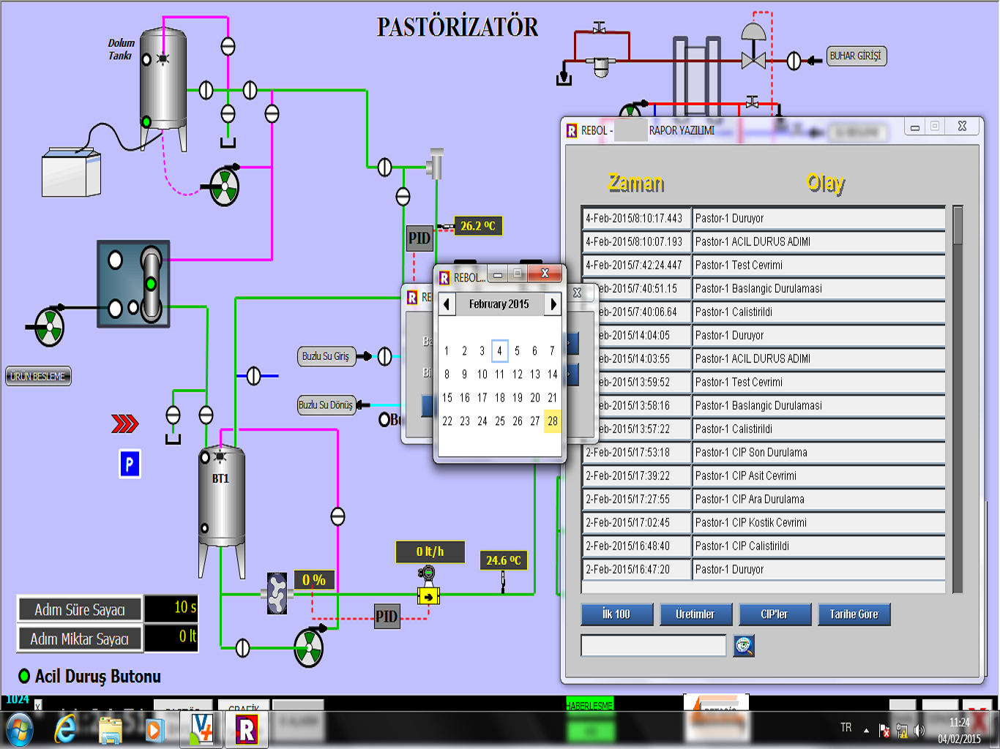

BETASIS CIP SYSTEMS

CIP System Design
Designing CIP systems for needs of Every plant and every production. Redesigning old production lines to new CIP system.
- Documentation and drawings
- Adapting old lines to CIP system
- Mechanical Design
- Equipment Selection
- Commissioning without stop production in plant

CIP Automation
Running CIP system fully automatic and independent from operators
- Controlling by Touch Panel or SCADA Software
- Different parameters for every object to be cleaned
- Design for avoid operator faults
- Software for maximum chemical saveing
- SQL data acquisition

CIP Installation
Hygienic piping and installations
- Assembling of designed CIP Unit
- CIP lines piping in plant
- Food grade hygienic installations
- Signalling to units to be cleaned
- CIP Connection Elbow Panels

CIP Reporting
Data acquisition and reporting trough SCADA software
- Data acquisition to SQL Server Tables
- Time and Results for realized cleanings
- OEE analysis
- Reporting according to plant needs
- Recording all temperature , pressure , flow , conductivity values for future investigations